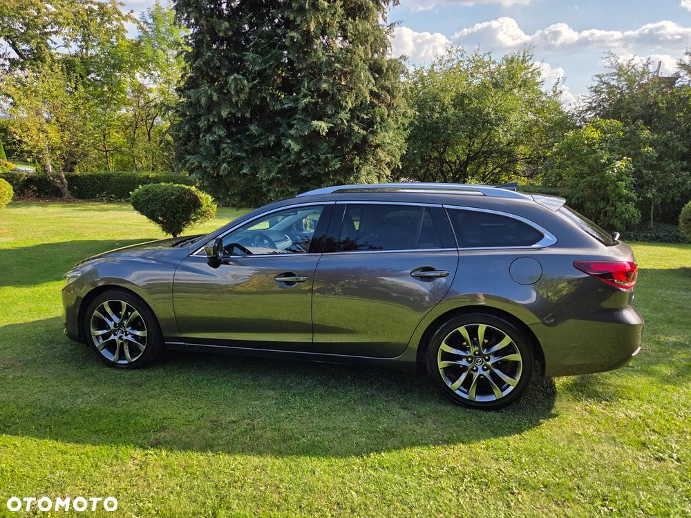

Sprzedam Mazdę 6 kombi Sky Passion 2.5 benzyna + instalacja LPG KME Nevo Sky Direct. Samochód w bardzo dobrym stanie, używany tylko przeze mnie od nowości. Mazda ma na wyposażeniu praktycznie wszystko oprócz szyberdachu. Nagłośnienie sygnowane firmą BOSE, lampy przednie adaptacyjne full LED, elektryka przednich foteli, aktywny tempomat, asystent pasa ruchu, kontrola ruchu poprzecznego z tyłu, podgrzewame fotele przednie i zewnętrzne miejsca tylnej kanapy, podgrzewana kierownica, itd. Jeździłem tym autem głównie w trasach. Serwisy na bieżąco, na gwarancji w ASO a po gwarancji w serwisie niezależnym. Posiadam pełną dokumentację wszystkich serwisów. Mazda nigdy mnie nie zawiodła i jest totalnie bezawaryjna. Po gwarancji przy przebiegu 118 707 km założyłem instalację LPG na bezpośredni wtrysk firmy KME model Nevo Sky Direct u autoryzowanego dealera KME w Krakowie (AutoNAgaz.net).
Instalacja działa znakomicie, jest bardzo dobrze dostrojona i auto jeździ jak na benzynie. Średnie spalanie LPG to 8-10 litrów na 100km + dotrysk 1,5 litra benzyny.
Przeglądy olejowo-filtrowe robiłem co 15 000km a instalacji LPG co 10 000km. Olej w skrzyni był wymieniany co 60 000 km.
Auto jest w pełni sprawne i nie wymaga żadnego wkładu finansowego.
Ostatni serwis wykonany przy przebiegu 205 000km. Nie dawno wymieniłem też przednie tarcze i klocki oraz akumulator.
Auto bezwypadkowe, jedynie była jedna szkoda parkingowa zrobiona z OC sprawcy w ASO 2 lata temu na kwotę około 18 000 zł brutto. W skład tego wchodziła wymiana prawej przedniej lampy (bo klosz był pęknięty i w takiej sytuacji wymienia się całą lampę LED), wymiana zderzaka wraz z lakierowaniem i lakierowanie prawego błotnika + cieniowanie reszty elementów. Posiadam pełną dokumentację wraz ze zdjęciami. Zdjęcia dołączone są do galerii.
Wgrany Android Auto.
Opony letnie i zimowe są po 3 sezonach i to są dopiero drugie komplety opon w tym aucie. Lato - Yokohama Advan Fleva na oryginalnych felgach 19 cali. Zima - Bridgestone Blizzak LM 005 na oryginalnych felgach alu 17 cali. Koła pezeważane co 7 000 km i zamieniane przód-tył żeby się równo zużywały.
Polisa OC ważna do 09.2026.
Do samochodu dokładam bagażnik dachowy i gumowe dywaniki na zimę.
